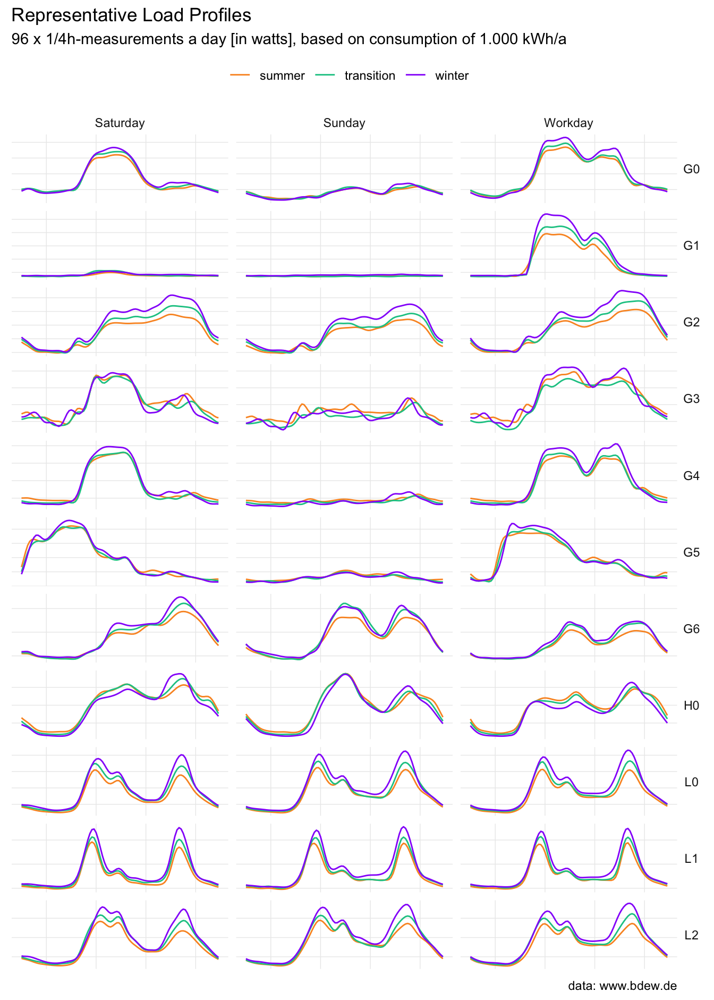
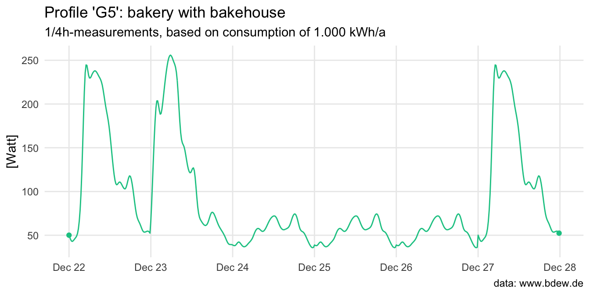

A load profile describes the consumption profile of an energy consumer over time. The package standardlastprofile provides load profile data for electricity from the German Association of Energy and Water Industries (BDEW Bundesverband der Energie- und Wasserwirtschaft e.V.) in a tidy format.

In practice, standard load profiles are used by an energy suppliers to create an annual consumption forecast for customers (or customer groups) who do not have a modern meter. That is, customers whose electricity consumption is not continuously measured. A load profile is a simplification that does not necessarily correspond to the consumption profile of an individual customer, but is a valid approximation for a larger group of similar customers.
Installation
You can install the development version of standardlastprofile from GitHub with:
# install.packages("devtools")
devtools::install_github("flrd/standardlastprofile")About the data
The standardlastprofile package contains one dataset called load_profiles used for the plot above.
library(standardlastprofile)
data(package = "standardlastprofile")The dataset contains 9,504 observations of 5 variables. Given a ‘day’ and a ‘period’ the data in load_profiles for a given ‘profile’ represents a ‘typical day’, e.g. a Sunday in winter versus a workday in summer. There are 11 load profiles for 3 customer groups:
head(load_profiles)
#> profile period day timestamp watt
#> 1 H0 winter saturday 00:00 70.8
#> 2 H0 winter saturday 00:15 68.2
#> 3 H0 winter saturday 00:30 65.9
#> 4 H0 winter saturday 00:45 63.3
#> 5 H0 winter saturday 01:00 59.5
#> 6 H0 winter saturday 01:15 55.0If you have no idea what “H0” etc. stands for, you are not alone.
-
H0: households (German: “Haushalte”) -
G0toG6: commerce (“Gewerbe”) -
L0toL2: agriculture (“Landwirtschaft”)
Call get_load_profile_info() for more information and examples.
Generate a load profile
Use the function get_load_profile() to generate a load profile.
get_load_profile(profile = "G5",
start_date = "2023-12-22",
end_date = "2023-12-27")The algorithm sets December 24 and 31 to be a Saturday, and a public holiday to be a Sunday – if they are not a Sunday. Note: As of now the package supports only public holidays for Germany, which were retrieved from the nager.Date API.

Source
Data is published on website of BDEW: https://www.bdew.de/energie/standardlastprofile-strom/
Code of Conduct
Please note that this project is released with a Contributor Code of Conduct. By participating in this project you agree to abide by its terms.